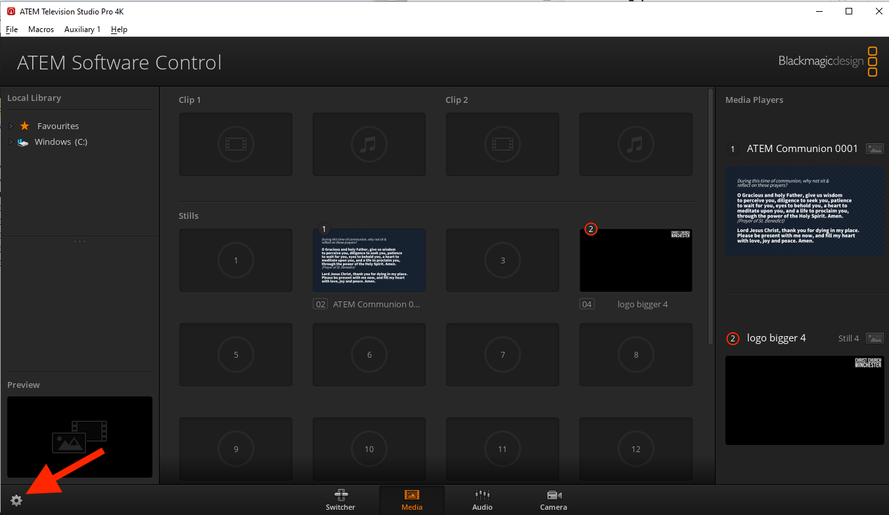
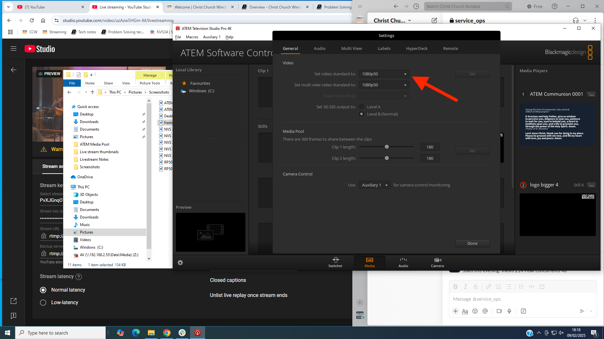
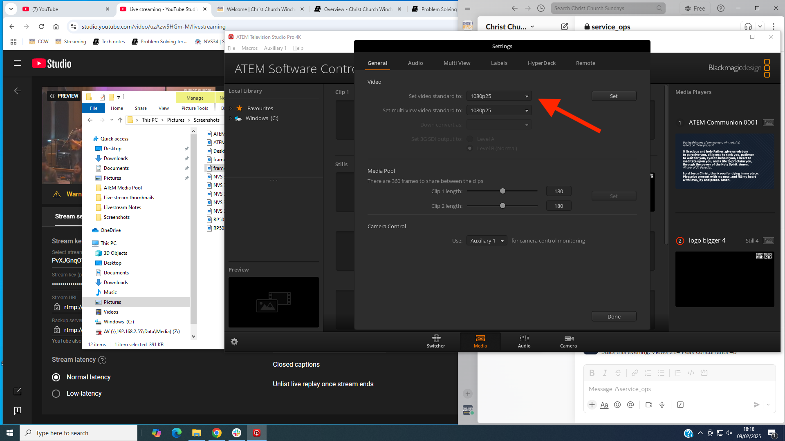
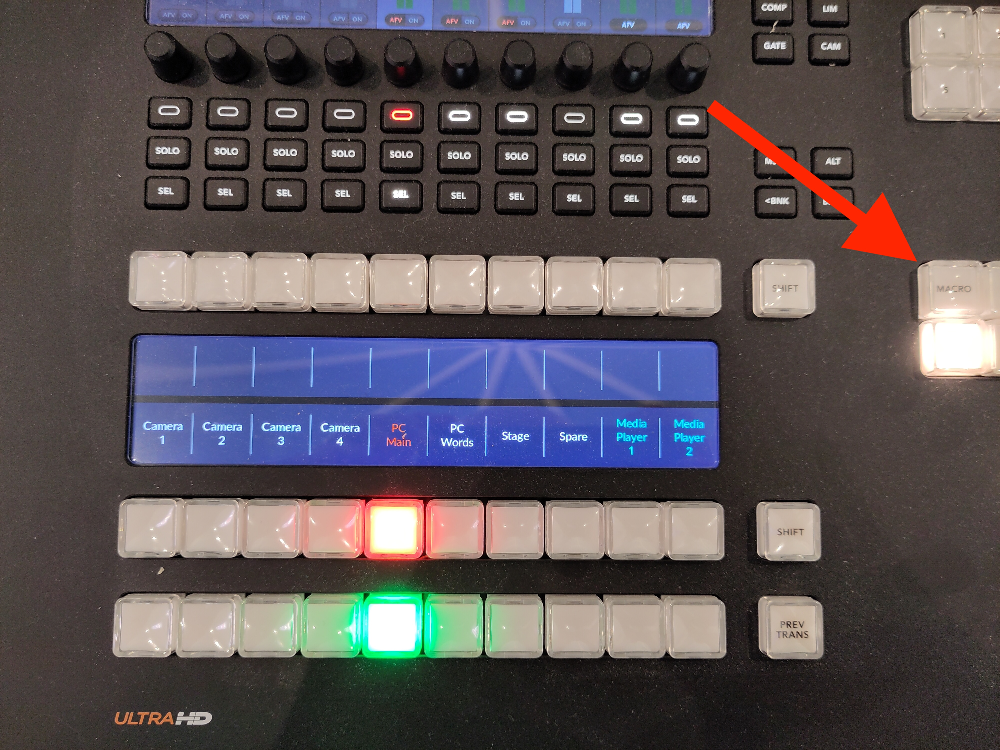

Live Streaming Tech Notes
Here are some technical notes on the CCWinch live streaming setup. See the official site for more operational information.
See also the list of known issues.
Contents:
- Hardware lists the various hardware devices and how they connect together.
- PC Software lists the useful programs on the streaming PC.
- Operation provides some tips for streaming a service.
- Audio describes how to mute the sound or change the volume.
- Settings captures various settings for posterity and problem solving.
- Problem Solving lists some problems we’ve encountered in the past with their symptoms and how to fix them.
- Scheduling Services describes how to schedule streams on YouTube.
- Media Players shows how to set the contents of a media player.
- Song Words describes how words from the AV computer are overlaid on the live stream.
- AV Feed describes how to display the live stream on the screens in church.
- Tutorials links to some basic tutorials on live streaming.
Hardware
Hardware
- Camera 1 - Panasonic AW-UE40KEJ 4K PTZ
- Cameras 2-4 - Panasonic AW-HE40SWEJ HD PTZ
- Cables (SDI, Ethernet)
- Panasonic remote camera controller AW-RP50
- Blackmagic ATEM TV Studio Pro 4K (video switcher)
- Datavideo NVS-34 streaming encoder
- PC - for connecting to Facebook, etc.
- tp-link PoE+ switch TL-SL1218MP
- Blackmagic video assist 7“ 12G HDR (combined scope/monitor/recorder/viewfinder)
Blackmagic video assist 7“ 12G HDR
The “scope” that’s in the live streaming desk drawer can be used for setting the colour and white balance of cameras.
Disconnect the SDI cable connected to the aux output of the live streaming Blackmagic ATEM. Connect another SDI cable from aux output of the live streaming ATEM to the SDI input of the scope, plug in and connect the power adapter, and power on.
To set the cameras up you need to select the vector scope on the Blackmagic Video Assist, and then black balance all the cameras first (close all the iris’s down) and then go through each camera ensuring that the dot on the vector scope is dead centre.
Then to white balance, put a white cloth on the stage and point all the cameras at that so nothing else is in shot (this is the only time it’s okay to use digital zoom!), and use the Auto White Balance (AWB) button on the camera controller. That should line up all the cameras and again, put the dot dead centre on the vector scope. If it doesn’t on some cameras that is where you’ll need to adjust the colour bias on each camera.
When you are done, please reconnect the original cable to the aux output of the ATEM.
PC Software
The streaming PC desktop has various shortcuts for useful programs.

- Datavideo NVS-34 streaming encoder software
- Log in using “admin” and the password in the shortcut
- See Settings for its normal settings
- Blackmagic ATEM TV Studio Pro 4K (video switcher) software
- Google Chrome
- Camera 1 - direct access to camera 1 over TCP/IP
- Camera 2 - direct access to camera 2 over TCP/IP
- Camera 3 - direct access to camera 3 over TCP/IP
- Camera 4 - direct access to camera 4 over TCP/IP
- RP50Tool - software for the Panasonic remote camera controller AW-RP50
- See Settings for its normal settings
Operation
Set Up and Set Down
See the official site for set up and set down instructions.
During the Service
Usually one person operates the switcher and another operates the camera controller.
Video switching
Use the ATEM video switcher to choose which camera to stream. Set the preview to the next camera, then use the “cut” button to make it live (or the “auto” button to cross-fade, but use this sparingly - see below).
Tips:
- To overlay words from the AV team, press the switcher “song words” button.
- Most of the time, cut between the preview and programme (using the “cut” button on the switcher). During “unstructured” periods of a service (e.g. when the service leader suggests a period of reflection while the band plays quietly), cross-fading (using the “auto” button on the switcher) can work ok. Here’s an example of an initial cut followed by cross-fading.
- During worship, cut relatively often when the tempo of the music is fast and less often when the tempo is slow.
- Avoid cutting between cameras showing people from the same angle and with the same size. Better to cut via another shot which is closer, further out, or from another angle.
- Try to avoid “flipping” the direction in which people are facing, e.g. by cutting between two cameras pointing in opposing directions.
- During speech, try to cut at the beginning of a phrase. During worship, try to cut at the end of a verse, or at least at the end of a line of a song.
- Try to anticipate what’s going to happen next. For example, if the service leader is about to hand over to the band, cut via a shot which includes them both.
- If you think someone is going to take a little while to get set up, e.g. someone leading prayers may need to pick up a microphone or remove a face mask, then cutting just before this happens makes the viewers more forgiving of the delay. The cut effectively gives 5-10 seconds of extra attention. Here’s an example.
- When videos are played, don’t forget to turn the Christ Church logo off. Also, start with a wide shot of the church which includes the screens and cross-fade to the video as it starts (here’s an example). At the end of the video, either cross-fade back to the wide shot or cut if you think it seems more appropriate.
- When you have two cameras next to each other, you can cut back and forth between a head and shoulders shot of a speaker and a shot of their full height. Since the angle doesn’t change, this is less distracting than cutting from side to side. Here’s an example.
- If you aren’t sure what a cut will look like, try it out on the preview pane of the multiview monitor by switching the preview between the cameras you are considering cutting between.
- Try to turn off the song words as soon as they are no longer needed. It may be worth having a word with the person on the AV desk before the service starts and asking them to delay a couple of seconds after a song finishes before putting the Christ Church Winchester logo back on the screen as this has a bad appearance on the live stream.
- To display one of the slides, such as the words for use while people are taking communion, select media player 1 using either Shift key and “MP 1”.
- When the live stream is being displayed on screens in church, you can use the ATEM switcher software “Auxiliary 1” menu to control what is displayed on the screens. This is usually “clean feed 1” (the live stream programme minus any downstream key, such as the Christ Church logo). But you could set it to a tight shot of the preacher, for example, so that you can cut to a wide shot for the online audience without affecting what appears on the screens in church. Remember to set Auxiliary 1 back to “clean feed 1” afterwards.
Camera Control
Use the remote camera controller to operate the remote PTZ cameras.
Tips:
- Choose a preset or manually zoom/pan each camera unless it is “live” (being displayed on the “programme” pane of the multiview monitor).
- Keep one camera on a wide “safety shot” so the switcher operator can cut to this if necessary, e.g. if the preacher starts moving around suddenly during a sermon. Camera 4 is often a good fallback for a wide shot as its quality isn’t the best. Here’s an example where the preacher caught us off-guard, but we recovered using camera 4.
- After the countdown, start with a wide “establishing shot” to set the scene (as well as the tone/mood). Here’s an example.
- During worship, sometimes a close shot of one or two people in the band (here’s an example) or of an instrumentalist’s hands (an example) can add variety and interest. This works particularly well if the switcher operator is familiar with the song and can anticipate when instrumental sections are coming up.
Audio
The audio on the live stream is largely determined by the input from the sound desk (or the AV desk when a video is being played), how the vocalists in the band use their microphones, and how the congregation sings. But there are a couple of things you can control, using the audio mixer in the ATEM software (see PC Software).
You can also get a rough idea of the volume by looking at the programme on the multiview monitor. The volume level shows on the left and should occasionally reach -5 dB.
If you need to hear the audio side of the live stream, use the scope (described in see Hardware):
-
Plug the SDI cable attached to an ATEM output into the SDI input socket of the scope.
-
Screw the scope power connector into the scope.
-
Plug the headphones into the headphone socket of the scope.
-
Turn on the scope by pressing the small power button on the side.
(You could also plug the headphones into the PC, unmute the audio on the PC, and listen to the YouTube stream on Chrome. The big downside of this approach is that there is a considerable lag between what’s happening in church and what appears on YouTube.)
Keep an eye on the chat sections of the Church Online Platform for comments about the sound quality from the host or the online congregation.
Muting
Sometimes it’s necessary to mute the sound. For instance, if the service leader asks people to talk to their neighbour, the sound should be muted to avoid picking up individual conversations (this has happened in the past - a particular risk for anyone near a microphone). Also, during the distribution of communion, it is worth muting the sound until the worship band starts playing.
To mute the sound, use the audio tab (shown below) of the ATEM switcher software on the live streaming PC. There is an XLR audio input which can be muted by clicking “on”. Click it again to unmute.

Volume
The volume is controlled by the level on the XLR audio input and the Master volume control, both on the udio tab (shown above) of the ATEM switcher software on the live streaming PC.
To increase the volume, move the XLR and Master sliders up, keeping an eye on the volume level on the multiview monitor.
To decrease the volume, move the XLR and Master sliders down.
Initially, both sliders are at about -0.6 dB (this figure is shown below the slider - the number above is the maximum reached since power on or the number being clicked).
Settings
Network IP addresses
| Device | IP address |
|---|---|
| Datavideo encoder | 192.168.0.180 |
| Camera 1 | 192.168.0.181 |
| Camera 2 | 192.168.0.182 |
| Camera 3 | 192.168.0.183 |
| Camera 4 | 192.168.0.184 |
| Panasonic Camera Controller | 192.168.0.188 |
| Blackmagic ATEM | 192.168.0.189 |
Panasonic remote camera controller AW-RP50
Launch the RP50Tool program (see Software) and set the RP1 IP address to 192.168.0.1881 on the IP Address tab and click the “Set” button. See the image below.

Then go to the Setting tab and click the “Refresh” button. The IP addresses of the cameras should be as in the screenshot below. If necessary, update the settings and click the “SET” button.
 (click image to view full size)
(click image to view full size)
Datavideo NVS-34 streaming encoder
Source tab:
 (click image to view full size)
(click image to view full size)
Operation mode tab:
Note: the RTMP URL and Stream Name correspond to the YouTube stream’s Stream URL and Stream key, respectively.
 (click image to view full size)
(click image to view full size)
 (click image to view full size)
(click image to view full size)
CG tab:
 (click image to view full size)
(click image to view full size)
System tab:
 (click image to view full size)
(click image to view full size)
-
If the IP address of the camera controller has changed, you’ll need to use that IP address instead. ↩
Problem Solving
Problem Solving
In general, try to narrow down and eventually isolate the cause of the problem. If there is a problem with one or two cameras and you can’t fix it before the service starts, you may be able to make do with the remaining cameras.
Remember the all-important line from “The IT Crowd” TV series: “Have you tried turning it off and back on again?”.
If you get stuck, try asking on the “Streaming” Slack channel or see if there’s someone around in church who can help.
The following problems are organised by problem symptoms, each with possible explanations and fixes. If you find a problem not listed here, please tell others about it so it can be added.
ATEM switcher is powered off (“no lights”)
This is often caused by the power cable coming loose. Reach over the back of the switcher and plug the power cable back in on the right hand side.
The multiview monitor is black
Check the monitor power and display cables are securely plugged in at both ends.
The camera controller is powered off (“no lights”)
Check the power cable hasn’t come loose and that the switch on the back of the camera controller is in the “on” position.
The streaming PC display is black
Check the display power and display cables are securely plugged in at both ends.
No stream appears on the YouTube preview
One cause of this is that the encoder is not streaming. Check the STREAM button on the NVS-34 encoder at the top of the live streaming rack. It should be lit up continuously in red. If it is white or flashing red, there is a problem.
To fix this, power off the encoder using the power button (a rocker switch with “1” printed above “0”) on the front of the encoder, wait 10 seconds, and power back on the encoder. It takes 20 seconds or so to boot up, during which time the four right hand buttons on the encoder light up red.
If the STREAM button is white after boot has completed, you can try pressing and holding it to start it flashing and very occasionally it turns to continuous red. But, ideally, rebooting the encoder will result in the STREAM button lighting up continuous in red.
You may need to repeat this encoder reboot sequence five or more times before the STREAM button lights up continuously in red.
Once the STREAM button is lit continuously in red, refresh the YouTube studio web page and see if the preview then displays the live stream. It takes 30-60 seconds or more to preview the stream, so please be patient.
The video of a camera does not appear on the multiview display
This may be because the camera has not been powered on. Use the camera controller to power all the cameras on.
To see if the camera is powered on, double click the relevant camera icon on the streaming PC desktop. If you see a picture from the camera, it is powered on and the problem may be that the SDI (video) cable is not properly connected to the camera (or to the back of the rack or to the back of the ATEM switcher). Disconnect and reconnect each plug in turn to ensure it is properly connected.
The camera controller fails to operate the cameras
The camera controller may still be in menu mode, in which case the “menu” button will be lit. Press the menu button to exit menu mode.
Alternatively, the controller may be operating a group of cameras other than group 1. You need to select group 1, thus:
- Press “menu” and then “8”
- Select “group” by turning then pressing the F1 dial
- Select “group select” by turning then pressing the F2 dial
- (I presume) Press “1” to select group 1.
Alternatively, it has been known for the camera controller to reset itself to factory defaults.
Try power-cycling the camera controller to see if this fixes the problem. If not, you may need to go to the setup menu and re-enter the IP address of each of the cameras: 192.168.0.181-184 (for cameras 1-4). The cameras also need to be set to “network” connection rather than “serial”. When entering an IP address, press F2 to select each “dotted decimal” number of the IP address in turn and turn F2 to change the current number. Refer to “Changing the camera numbers” on page 34 of the basic manual for the camera controller (available under Hardware) for how to set camera IP addresses. The IP address of the camera controller also needs to be set to
the correct value: 192.168.0.188. If you prefer, you can use the RP50Tool shortcut on the streaming PC desktop to make these changes (but beware that the tool uses the camera controller’s IP address to communicate with it, so this will need to be changed as necessary).
If the camera controller cannot be made to work, try using the camera controller software (“RP50Tool”) on the streaming PC.
If all else fails, you can gain some basic control of the cameras over TCP/IP using the shortcuts on the streaming PC desktop. See Software.
The encoder stream button flashes red
This may be due to the encoder looking at the wrong input. Open up the encoder software on the streaming PC (there’s a shortcut on the desktop, with a note of the admin password on the shortcut), select the “source” tab, and ensure that the SDI source is selected (rather than HDMI).
When the encoder is streaming normally, the stream button should be lit red continuously.
The “go live” icon is greyed out on YouTube
This may be due to the stream in question having already been used, even if only briefly. You need to create a fresh stream. See Scheduling services for instructions.
The live stream does not appear in the preview on YouTube
This may be because the video encoder in the rack is not yet in streaming mode (the “streaming” button needs to be lit in red). Press the streaming button on the video encoder to start streaming. Note: this isn’t usually necessary, so be patient while YouTube connects to the stream as this can take up to 20-30 seconds.
YouTube shows “no data” or “poor connection”
This may be an intermittent or permanent problem and means that the stream will not record properly.
Unless this clears up before the start of the service, the live stream will not be possible (and we don’t attempt to record the stream to a SD card like we sometimes used to).
(If there is a temporary internet outage and the YouTube stream cannot be connected to after the internet is back up, it may be possible to create a new stream and use that.)
The internet is not accessible from the live streaming PC
The antivirus/firewall software on the streaming PC may be out of date. Temporarily disable the antivirus/firewall from the network settings to work around this.
Another cause of losing internet (across the whole site!) is if the camera controller has lost its settings and set its IP address to the default of 192.168.0.10 which conflicts with the church’s main internet gateway. See The camera controller fails to operate the cameras for how to set the camera controller settings back to what they should be.
Poor sound quality on the live stream
Sometimes the host or a member of the online congregation will point out that the sound is poor or that there is a specific problem with the sound. Check the sound level on the “live” panel of the multiview monitor. If it seems too low, check with the sound desk operator that the sound desk is correctly set up. If it’s still too low, you can boost the volume by using the ATEM switcher software on the live streaming PC. In the audio tab there is a master volume slider and a xlr slider which can be increased.
Song words not outlined in black
If the song words are no longer outlined in black, reload the ATEM settings (but not during a live stream in case this interrupts it) and save the startup state. A good set of ATEM settings is in the Documents folder of the live streaming PC. Reload them using the ATEM software and use the ATEM software to save the startup state.
Christ Church Winchester logo not visible
If the logo does not show, reload the ATEM settings (but not during a live stream in case this interrupts it) and save the startup state. A good set of ATEM settings is in the Documents folder of the live streaming PC. Reload them using the ATEM software and use the ATEM software to save the startup state.
Problems with the song words or AV input (“camera 6”)
The AV and live streaming desks may have been powered up in the wrong order. This should be impossible following the ABCDE refurbishment: the equipment is powered up in the correct sequence automatically. This ensures that the graphics card in the AV PC detects the correct inputs.
There is also a Microsoft Word document on the AV PC which describes the display arrangement (“3, 4, 1|2”, where displays 1 and 2 are mirrored) and EasyWorship settings.
YouTube connection problems
If the live stream fails or YouTube reports buffering problems for more than a second or two, there may be an issue with the internet connection. There’s not much you can do about this, but please report it so we can look into it.
Framerate problems
Sometimes the YouTube preview shows people moving around much faster than normal. This is due to an incorrect framerate being used.
(There is another benign framerate issue when YouTube complains that the framerates of the primary and secondary streams are not the same - just ignore that.)
One workaround is to power down the whole tech desk and then power it up again. This takes several minutes and is usually too disruptive to the sound and AV teams. It may be possible to work around this by power-cycling just the live streaming Blackmagic ATEM and/or the encoder (the unit at the top of the live streaming rack).
Another, more reliable, workaround is to use the ATEM software on the live streaming PC to change the video standard and then change it back again, as follows:
-
Open up the ATEM software (see PC Software).
-
Click the gear icon to access the settings: 
-
Use the drop down menu to set the video standard temporarily to 1080p25:  and click Set. The setting should now look like this:  and the multiview monitor will be black.
-
Now use the same drop down menu to set the video standard back to 1080p50 and click Set.
-
Soon the framerate should be corrected and the YouTube preview should show people moving at the normal speed.
{kind=link}
{kind=link}
{kind=link}
Scheduling Services
Scheduling Services
Each service needs a YouTube stream. Essentially, you can create a YouTube stream from a past stream.
This 8 minute video shows how to schedule a new YouTube stream except that now we are using YouTube as the platform for the online congregation, you should make the stream public and enable “chat” and “chat replay” and there is now no longer a need for a “catch up” playlist, so new YouTube streams do not need to belong to a playlist.
You may need to schedule a stream in an emergency if you encounter a situation where the stream you want to “go live” has already been used. The “go live” icon is greyed out and you need to schedule a new stream. It’s relatively easy to do this from the streaming PC if you hit this problem.
We’ve also started adding a custom thumbnail to each stream. There’s one for “all in” services and then five 11am and five 7pm thumbnails - one for each week of the month. Download and unzip this zipfile for the thumbnails.
Weddings and Funerals
For weddings and funerals, create an unlisted YouTube stream with an appropriate thumbnail. Enable “chat”, but disable “chat replay” to be on the safe side.
Once you’ve created the stream, look for it in the list of live content in the Christ Church YouTube channel. Click the three dots next to the stream and select “Get sharable link” to get a link which can then be distributed to the family, friends, and others.
Media Players
Media Players
Media player 1 on the ATEM is used to display an image on the live stream (independently of the AV desk). This is useful when the stream audio and/or video has been turned off or when the live streaming team need to make an announcement to the online congregation. (The YouTube live chat isn’t as effective since some viewers don’t see the chat.)
Examples of when this may be appropriate:
- During part of a communion service.
- When copyrighted material is being used in church.
- During a baptism or dedication at the parents’ request.
- During a sensitive personal testimony.
To display a given image on the live stream follow these steps:
-
Download the image onto the live streaming PC.
-
Add the image to the ATEM’s media pool (see below).
-
Load the image from the media pool to media player 1 as follows:
a. Open up the ATEM software application on the live streaming PC.
b. Select the “Media” tab (see the screenshot at the bottom of this page).
c. Drag the required image from the media pool in the centre to media player 1 on the right.
-
On the ATEM, preview media player 1 using either Shift key and “MP 1”.
-
Cut at the appropriate time.
Notes:
- Media player 2 is dedicated to adding the Christ Church logo to the live stream and should not be used for displaying images.
- The term “media player” might give the impression that a video can be played, but this isn’t the case. AVI, MOV, MP4, and similar formats are not supported. It is apparently possible to display “image sequences”, but that seems pretty tricky.
Adding an image to the ATEM’s media pool
An image can be added to the ATEM’s media pool by following these steps:
- Download the image onto the live streaming PC.
- Opening up the ATEM software application on the live streaming PC.
- Select the “Media” tab (see the screenshot below).
- Locate the image in the Local Library on the left.
- Drag the image to one of the “stills” slots in the centre.

Song Words
The following applies to text output from the AV computer including song words, liturgy, and scripture.
There are two outputs from the AV desk that enable the ATEM to overlay song words on the live stream:
-
AV output: from EasyWorship running on the AV PC. There is a HDMI output of a graphics card in the AV PC which passes, (presumably) via a HDMI to SDI converter, to the live streaming rack. The content of this appears on the live streaming multiview monitor as “AV PC” at the bottom left. When a song is displayed on EasyWorship, the words appear here as white on a black background.
-
Alpha channel: from EasyWorship running on the AV PC. There is a DiplayPort output of a graphics card in the AV PC which passes, (presumably) via a DisplayPort to HDMI converter, to the live streaming rack. The contents of this appears on the live streaming multiview monitor as “HDMI Input” at the bottom right. When a song is displayed on EasyWorship, the words appear “thickened” and in white on a black background. The thickening is due to a black outline on the song words.
AV Feed
The aux output of the live streaming Blackmagic ATEM is connected to the “Live Stream” input of the AV Blackmagic ATEM.
The aux output is set, by default, to “clean feed 1” which is the same as the live stream but without the Christ Church logo. So it includes song words if these are shown.
The AV operator can choose to display one of the cameras directly on the screens in church, but this won’t include song words. Also, if the AV operator chooses a camera that the live streaming operators then pan or zoom, the congregation will see this happening on the screens. The AV operator could coordinate with the live streaming operators for a smooth result.
However, to include the song words overlaid on a camera output on the screens, the AV operator can choose the “Live Stream” input. The live streaming operators are then free to choose which camera this displays.
Note that the ATEM software on the live streaming PC can be used to change what is output by the aux output of the ATEM. The default is “clean feed 1” (see above), but it is possible to “pin” the aux output to one of the cameras. To do this use the “aux” drop-down menu at the top of the ATEM software application. This is handy, for example, for streaming a wide shot which wouldn’t be suitable to display on the screens in church.
AV desk and the screens at the front of church
By default, the AV desk displays its output on all the screens in church. When the live stream is being displayed and this is showing the preacher, for example, it’s best not to display the AV output on the front screens (above the stage) because, otherwise, people near the front tend to look at those screens rather than directly at the preacher.
To stop the output going to the front screens, use the AV Blackmagic ATEM as follows.
-
Press the “MACRO” button: 
-
Use the two left-most macros to stop (“Front Scr to Black”) or start (“Front Scr to Program”) the AV output being displayed on the screens on the stage:

-
Press the “MACRO” button again to turn off the list of macros.
{kind=link}
Tutorials
Video Tutorials
- Live streaming for beginners - a good place to start
- Blackmagic video switcher - a tour of the basic functions of the video switcher
- Framing - rule of thirds, head room, and lead room